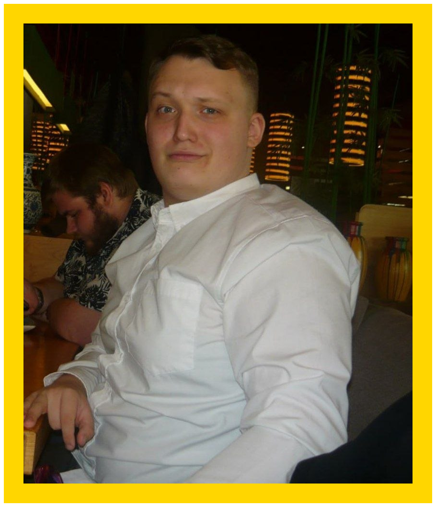
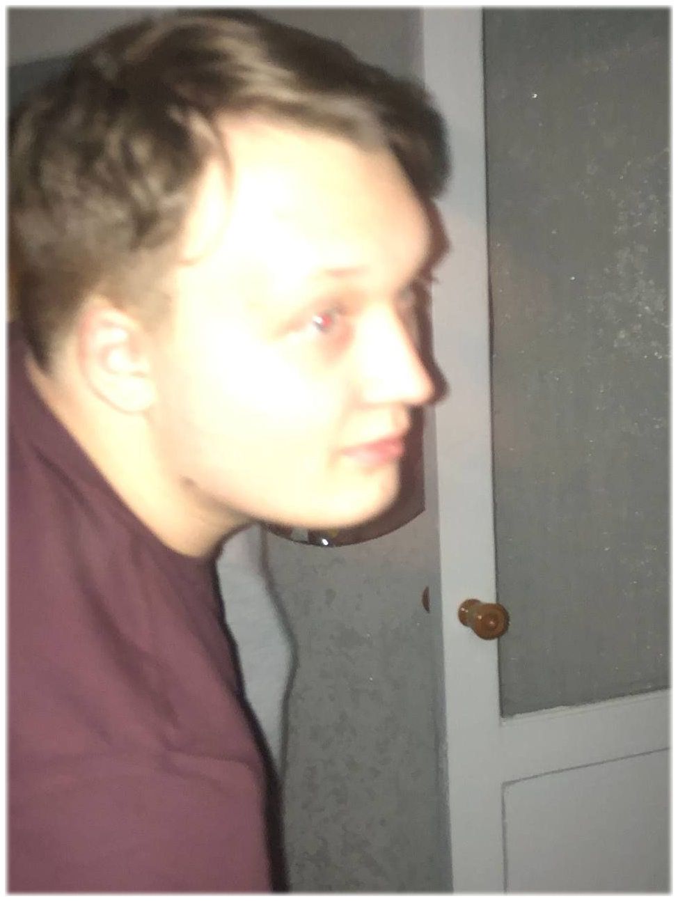
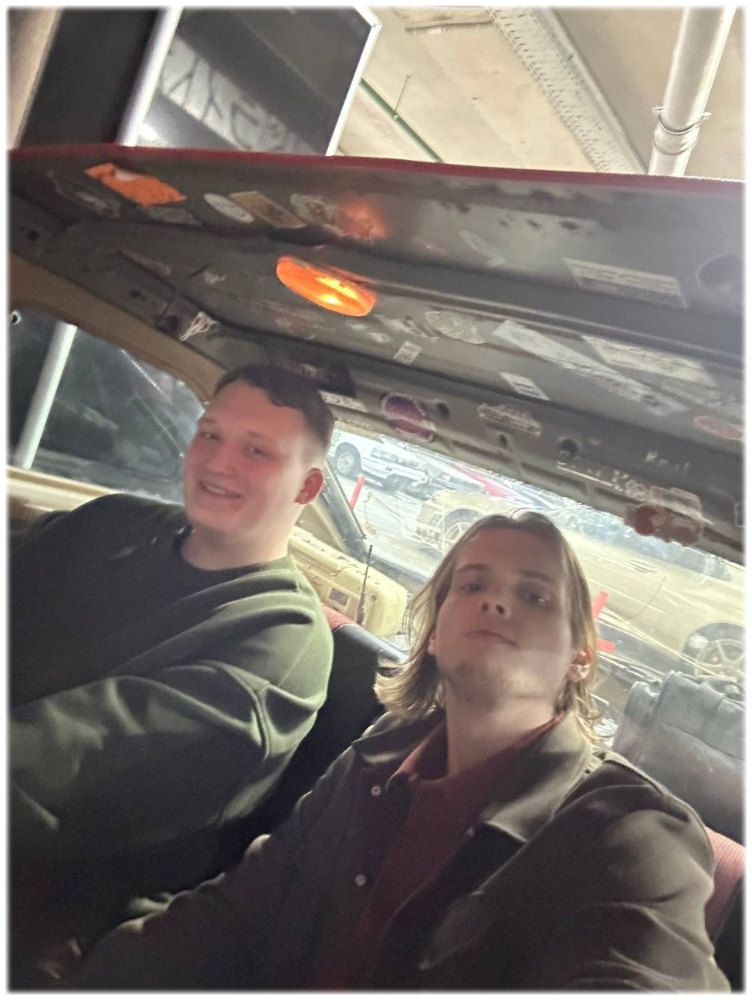
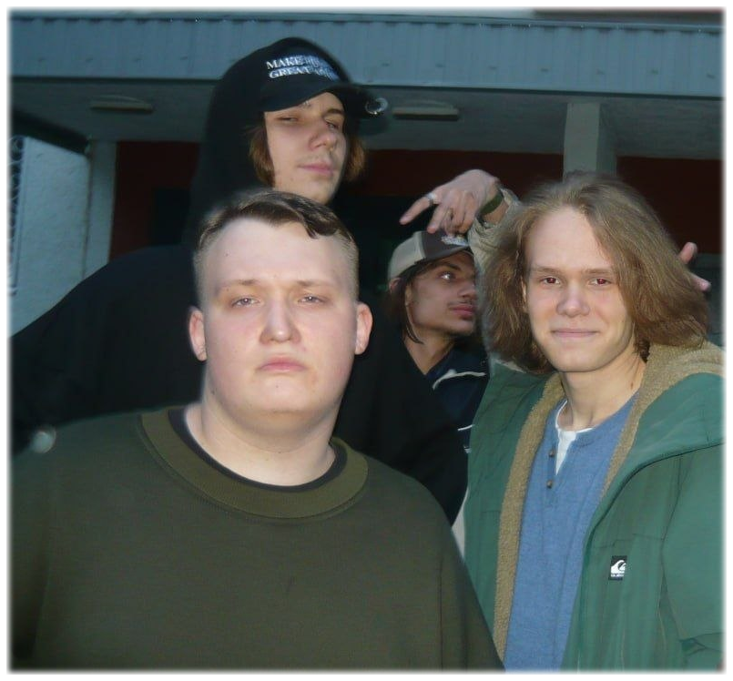
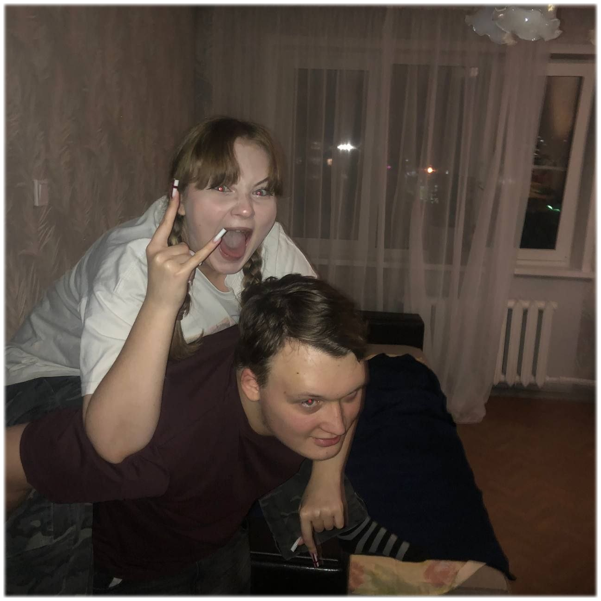
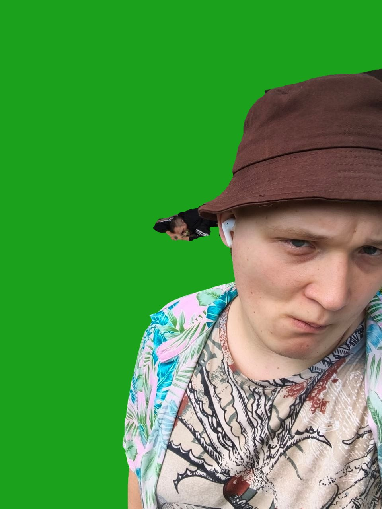
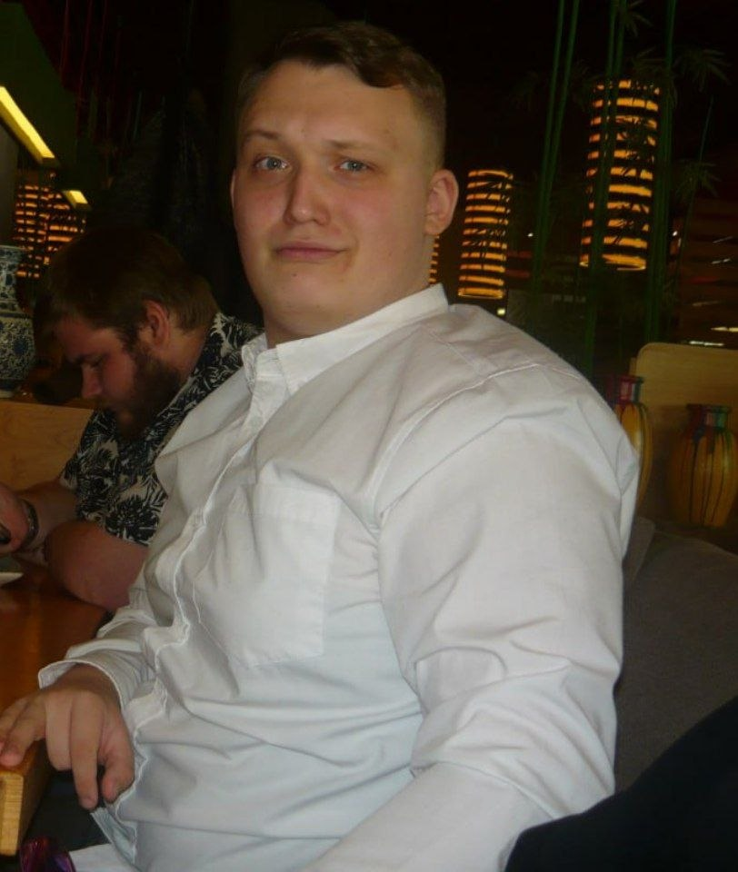
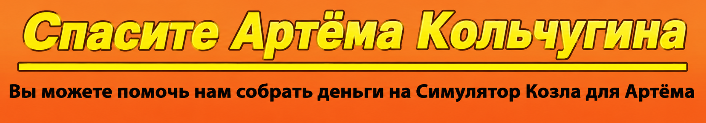
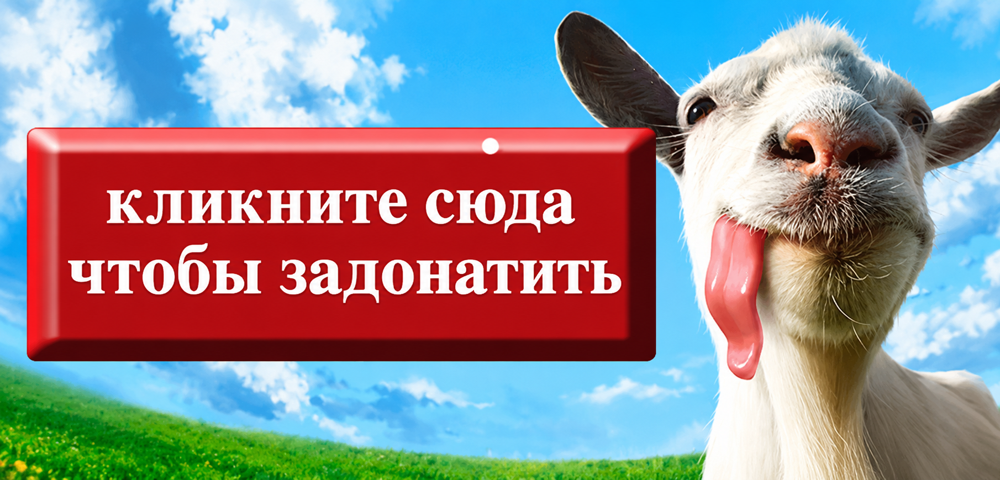

Мой тренер по дедлоку очень крутой. Это забавно, но я не знал об этом пока Я
не узнал что ему не хватает на симулятор козла. Вот так вот. Тогда я думал о многом.
Даже о том о чем я обычно не думаю, или не думал до этого. Я типо воспринимал
его как данное.Я имею в виду, тип, наши коучи почти всегда здесь. Ты ждёшь от них
что они будут ползать за тобой чтобы ты учил макро или чтобы ты перестал собирать ган
Вискуса или начать учить новых героев чтобы не быть однопулым червяком. И что они будут заставлять
тебя регать по 10 ранкедов и вся та хрень от которой я на потолок лез. Но всё стало другим с того момента
как моему тренеру перестало хватать денег на симулятор козла. Я понял, что этот день чуть ли не сродни
страшному суду, и то что его может не быть рядом просто сводило меня с ума.
Теперь я чувствую себя везунчиком когда он спрашивает сколько раз я фиданул на линии
(раньше меня это очень сильно бесило) или начинает жаловаться что я не смотрю на мини-карту
из-за чего теряю волкеры. Но в один день он не спросит. Теперь я чувствую себя везучим когда он
бугуртит в войс из-за моего счёта. Мне даже нравится слышать как он рыгает. Это значит что он все
ещё здесь. Всё еще мой тренер.


Эту историю я собирался рассказать аалиену, но думаю, что будет полезно узнать всем. Года два тусовался я на одном форуме. На каком не скажу, но если кто догадался, то не палите. В те времена я и слова такого не знал «троллинг», но побуянить любил. И была на том форуме прикольная девчонка. За словом в карман не лезла, с лёгкостью могла и хейтера отшить и тролля подъебать и случайно набежавшего хомяка уматерить. В общении же была просто золото. И тему поддержит и умное замечание вставит. Весёлая и непринуждённая. Короче все её любили. (Кроме одной шлюхи с парой дыролизов, но это совершенно не относится к делу.) И вот в один прекрасный момент её решили сделать модератором. Дали молоток, все дела. И вот как сейчас помню её первый бан. Набежал уёбок, она пыталась его урезонить, но он был невменяем. Она его забанила и отписалась по поводу своих действий: «Ощущаю себя очень мерзко. Пойду и вымою руки.» И это было искренне, Анонимус! А потом была ДРАМА и я ушёл с форума. Бродил по интернетам, страдал уднёй и недели через две вернулся.
От увиденного я малость приудол. Эту девчонку, модератора, материла половина форума. Вторая робко предлагала «хотя бы разбанить». Её забанили пожизненно причём банил тот же модер, который её на должность и рекомендовал. И даже стишок про неё сочинил в котором были слова «жаба», «сука» и им подобные. Ну я такой борзо и вопрошаю, что за дела, мол, вы там не упоролсяи? Этож %nickname%, как вы могли, блѣди. Ну мне и обьяснили, что после моего ухода девчонка эта слегка изменилась. Она только и делала, что махала молотком направо и налево, использовала его как аргумент в споре. Хамила, огрызалась, вела себя очень злобно. В конце концов всем надоело и её вынесли вперёд ногами. К чему я это всё рассказываю. Вот ты, ОП, говоришь я задницу лизал. Я этот молоток не выпрашивал. Когда аалиен мне в четыре часа ночи сказал, «ну ты теперь модератор», я переспросил «а ты с кем сейчас разговаривал?», а он ответил «с тобой», то я вовсе не уссался, от счастья. Я усрался от ужаса. Я, блджад, одновременно тянул, как Горлум, свои жадные ручонки к молотку и мерзко шептал «да! ДА! Моя прелес-сть!!!». И в то же время вспоминал историю с той девчонкой. В этом месте должны были быть пространные рссуждения о человеческой природе и о том, как власть меняет человека, но у меня сильно болит голова и моя кошка чёто приболела и уже третьи сутки нихуя не жрёт да и вообще. Поэтому мораль из этой истории как уж без меня выведи.
28 ПЕЛЬМЕНЕЙ ЗА РАЗ!!! ЭТО БЫЛ ГОЛОД? ДИЕТА? ТВОЙ ЖЕЛУДОК УМОЛЯЛ О ПОЩАДЕ, НО ТЫ ПРОДОЛЖАЛ ЕСТЬ ИХ!!! СНОВА, И СНОВА, И СНОВА, ПОКА ОН НЕ ЗАБОЛЕЛ. ТЫ ОБЖОРА, ПРИЗНАЙ ЭТО!!! ЭТО ЧТО, ТАК СЛОЖНО? СКАЖИ: "Я ОБЖОРА", СКАЖИ!!!
Какой замечательный у меня тренер,
, но он в беде!
Он не может купить симулятор козла.
Нужен обход!
Чтобы помочь, отправьте пожалуйста своё пожертвование
на его Стим.
и молитесь за него чтобы ему хватило!


>ЛЮБАЯ СУММА БУДЕТ ПРИЯТНА!
Те, кто уже задонатил: